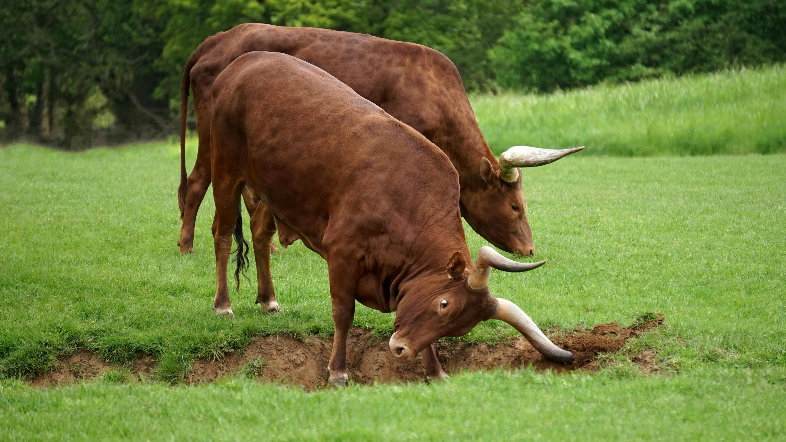

El toro es un animal imponente y poderoso. Su figura se asocia con la bravura y la fuerza. En muchas culturas, el toro es símbolo de valentía y tenacidad.
¿Sabías que los toros son utilizados en corridas y espectáculos taurinos? Sin embargo, también son criados para la producción de carne y otros productos.ejemplar adulto y macho que pertenece al grupo de los bóvidos. Se caracteriza por su cuerpo robusto, cubierto de pelo corto, y por sus cuernos. Los toros (machos) y las vacas (hembras) componen el ganado vacuno. En el caso de los toros, pueden pesar más de 1.000 kilogramos y medir hasta un metro y medio.